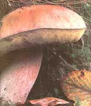
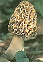
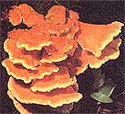
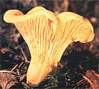
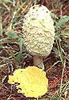
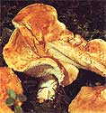

Celebrating The Wild Mushrooms
March/April 1987
A beginners guide to the book of fungi.
Excerpted from the book by Sara Ann Friedman.
Once I was standing at the base of a giant redwood in northern California. Huge branches, larger than whole trees in my eastern woods of birches and maples, crisscrossed in intersecting webs. There was no sky above, only more redwoods and the secrets of a thousand years.
Fleeting shadows, footsteps, and whispers broke the mood. Were they the murmurs of hidden forest creatures? The shadows turned into substance, the whispers into loud human voices. "Anything yet?" called one. "Over here," another answered. There must have been 15 or more of them circling the trees, their eyes fixed on the forest floor.
A shaft of sunlight filtered through the tops of the trees and disappeared among the highest branches. Look up! Look up! I w anted to shout, but to my bafflement they were all on their knees, filling their paper bags and baskets with large, white mushrooms. I could not help but laugh to myself at the sight of these frenzied foragers-a group of local mushroom hunters out in the woods on a single-minded search-who could not see the forest for the fungi.
Today my laugh would be touched with irony, for in the years since then I have become one of them, a mushroom zealot. My search for these fleshy fungi has taken me to the steep slopes of the Rockies, where I never looked up to see a snowcapped peak. And I am glad to have once seen the redwoods, for I now know that when I return, it will be on my hands and knees, nose to the ground.
There are thousands of species of mushrooms in North America, many of which have very strange shapes and don't look anything like mushrooms at all. Resembling heads of cauliflower or coral, slabs of beefsteak, soccer balls, turkey tails, or icicles, they hang, protrude, and billow from tree trunks, leaf mold, dead logs, and stumps. (They also grow on bathroom floors, dead bodies, in woodpecker holes, and on other mushrooms.) Mushrooms have fanciful folk names like "witch's butter," "shaggy mane," and "bear's head." Some turn blue or red when they are bruised; others glow in the dark. (A World War I soldier wrote home to his wife, "I am writing to you by the light of five mushrooms.") Many mushrooms are wonderful to eat; others are toxic enough to cause serious, if temporary, discomfort. Most are simply unpalatable, tasteless, or too tough to eat. A few are deadly.
Fungi inhabit every nook and cranny of the living world. By releasing an enzyme, they break down and absorb organic material into their own tissue. As a parasite the fungal mycelium attacks living trees or tree wounds as well as tissue in flowers, stems, leaves, and roots. One-celled parasitic fungi cause corn smut, chestnut blight, Dutch elm disease, and wheat rust. Some fungi are saprophytes (the Greek word for "rotten"), nourishing themselves on the tissue of dead and decaying wood, leaves, conifer needles, dung, bones, and feathers.
As I ventured into this new kingdom, I began to see how intricate and complex the world of fungi is, and how intertwined with our own. Without them, we'd be up to our eyeballs in fallen trees. Decomposing bark, leaves, and twigs, fungi clear the fields and forests of nature's clutter and turn decaying matter into nutrient-rich humus. Efficient waste disposers and major manufacturers of organic fertilizer, their success has not yet even been approached by the greatest human efforts.
Not alone in my devotion to mushrooms, I am part of a small but growing population of loyal subjects. There are thousands of us in North America and many more in Europe, where the gathering of mushrooms dates back to ancient times and has always been a family ritual.
It is difficult to explain why these fungal fruits draw us into the woods, tempting us to forget time, ourselves, and our families. Looking for wild mushrooms allows us to satisfy without dire consequences those childhood urges that we are encouraged to bury. It allows us to get dirty. It gratifies our urge to steal. Crawling furtively through the woods, guarding our secret places, we fulfill our primal, competitive, and territorial drives. The search for mushrooms expands our world and leads us down new paths of knowledge, connections, and pleasure. Finding them allows us to retreat into private obsession. Anyone who has climbed the Himalayas or collected baseball cards, butterflies, or Mayan vases knows what it means to search for wild mushrooms.
Introduction to the Field
For some, identifying mushrooms turns out to be a far more challenging activity than finding them, and far more rewarding than eating them. It exercises the mind and creates the pleasant illusion that the world would be a manageable place if only we could put the right label on everything. To the newcomer, many mushrooms are indistinguishable, like so many ducks on a pond. But as you learn to tell a mallard from a decoy, you learn to tell a Russula from a stinkhorn. All you need is a sharp eye, a delicate touch, and a strong nose.
A mushroom will willingly answer a lot of your questions, but first you need to know what to ask: Where and how is it growing? On a log or on a tree? In a grassy meadow, under the leaves, or in the bathroom shower? Some mushrooms grow singly or in scattered groups; others grow in clusters, all attached to a single base. When you dig up a mushroom, be sure to get it all out and to examine the base: Is it straight or is it bulbous? Does it have a sac? When you turn mushrooms over, you will see that many have gills underneath the cap, while others have pores, teeth, or coral branches. Colors vary in tone and intensity. Mushrooms come in all shades of almost any color you can think of. Sometimes, but not always, color is a key to the mushroom's identity.
Feel the mushroom: Is it rough and leathery, fleshy, or fragile? Does it have a stem? Is the cap smooth, hairy, or downright slimy?
You can also use your sense of smell. Mushrooms give off an amazing variety of odors, resembling everything from nectar to burnt rubber. Like fingerprints, these characteristics of mushrooms are clues to proper identification.
If you want to learn more than a handful of species, a field guide is essential. Even 20year veterans keep one in their back pockets. There are probably 100 in English alone, ranging from small local and regional guides to books that cover North America. Some are illustrated with lush colored plates; others rely on a clear, precise text and limit themselves to black and white drawings or photographs. Some are universally respected; others are totally useless. [Editor's Note: See the sidebar for a list of recommended field guides.]
Apart from buying books, mushroom hunting is not an expensive activity. All you need is a basket, a box of wax paper or some wax paper bags, a knife, a 1OX hand lens, a compass, insect repellent, index cards, lunch, and of course your favorite field guide. Pick fresh specimens, and try to find them at different stages of development. On one side of an index card, note the habitat (lawn, log, tree, kind of tree if you know it, and so on). On the other side, when you get home, you will want to place a cap gill-side down, cover it with a glass, and take a spore print. Spore color is very important in the identification of most gilled mushrooms. And remember to wrap each species separately in wax paper. Sometimes you might want to stop and actually use your field guide in the field. Ideally, this patient and efficient style of collecting will make your task of sorting and identifying much easier.
I know of few collectors who follow their own advice, however, and more often than not I find myself forgetting everything but lunch.
The Gilled Mushrooms
These are what most of us picture when we say the word mushroom. They have a stalk and a rounded cap with gills underneath. Spores develop on these bladelike gills, which radiate from the stalk to the edge of the cap.
Gilled mushrooms come in a dazzling variety of sizes and colors and an infinite variety of characteristics that are clues to their identification: central and of center stalks; gills that are close, distant, smooth, or serrated; caps that are velvety, slimy, scaly, or fuzzy; spore colors that are white, pink, brown, or purple-black. Some grow on the ground; others grow on wood. Some grow singly; others grow scattered or in clusters. Most of the mushrooms found in woods and on lawns are gilled. They include some of the best common edibles (the honeys, blewits, parasols, and meadow mushrooms) as well as some of the deadliest killers (the Amanitae and Galerinae).
Boletes
With over 200 species in North America, this large family of mushrooms, Boletaceae, is easy to recognize. Boletes often resemble gilled mushrooms from the top, but when you turn them over, you will notice a spongy bottom or pored surface instead, which may be white, gray, yellow, orange, red, or brown.
Boletes grow in mycorrhizal, or symbiotic, association with the roots of many trees, and some grow under only one kind of tree such as ash, white pine, or larch. By noticing this, you can learn about both trees and mushrooms. Many boletes will turn blue when they are bruised.
Corals
Many members of this mushroom family, Clavariaceae, truly resemble underwater coral. They usually come club-shaped or branched and in many bright colors, from white to yellow, pink, orange-red, amethyst. Sometimes they will cover the ground in late summer or fall, particularly favoring conifer woods. Others resemble cauliflower or heads of lettuce. Most coral mushrooms are edible. A few, like Sparassis crispa and Sparassis radicata, are choice.
Cup Fungi
Turning over a rotten log on a wet spring day will often reveal a tiny orange or scarlet mushroom shaped like a cup. Appropriately named cup fungi, these brightly colored species are part of a class, consisting of many families and orders, called Discomycetes, which contains all the fungi resembling cups or saucers, spoons, sponges, saddles, brains, tongues, urns, or fans including the highly esteemed morel and truffle.
Polypores
Even on dry days and in the dead of winter, these mushrooms will cover trees and stumps with fungal shelves. Polypore means "many pores." If you turn over one of the mushrooms in this very large and diverse group, you will see tiny holes-hexagonal, round, or mazelike-under the cap.
Some polypores are edible and delicious. Many are tough and leathery. They can be virulent parasites on living trees, or they can serve an important function as saprophytes helping to decay dead wood.
In many cultures and for many centuries, certain polypores have been used as tinderboxes, perfumes, dyes, and as medicines and tonics.
Puffballs and Earthstars
One of the most common groups of I mushrooms, puffballs grow throughout the summer and fall in all parts of the country, in grassy areas and on logs. Sometimes they are large, round, and white like a soccer ball; other times they grow like small prickly pears in dense clusters. Puffballs and earthstars are of the class Gasteromycetes, a word that means "stomach mushroom"; their spores mature while completely enclosed in and protected by a surrounding "skin."
Earthstars, which like puffballs are members of the order Lycoperdales, are small fungi that resemble flying saucers. They are shaped like a ball when young; then the surface splits open, releasing the spores through the top, and the pieces curve back, forming four or more arms that resemble a star. Growing mostly in sandy soil, earthstars are distributed throughout North America.
Stinkhorns
Your nose will probably lead you to these strong-smelling mushrooms before you ever catch sight of them. But when you do, you will discover some of the most colorful, oddly shaped fungi in the forest. The stinkhorns, which are of the order Phallales, have evolved a unique means of spore dispersal. The spores are embedded in a slimy, green substance that smells of decaying flesh. The . odor draws flies and other insects, which remove the slime-and also the spores-with their feet. Stinkhorns first appear as eggs that resemble puffballs or Amanita eggs. As it matures, the egg opens by expansion from within, and fanciful shapes develop. Stinkhorns are exotic and erotic, largely southern in their habitat.
Tooth Fungi
It may seem like Christmas in September when you are in the woods and walk smack into a tree decorated with large clusters of glistening white icicles. But the tree is more likely to be an oak, maple, or beech than a fir or spruce, and the cluster of icicles is a mushroom called Hericium.
Members of a large family of mushrooms called Hydnaceae, the genera Hericium, Dentinum, and Hydnum produce their spores on long spines or teeth that hang down toward the ground. Although not as common as boletes and polypores, these tooth fungi are just as easy to recognize. Some, like the Hericium, grow on logs, stumps, and living trees, and thus they are noticeable from a distance. The smaller Dentinum often grows on the ground with caps of many colors. Although none of the tooth fungi are known to be poisonous, many are too tough and bitter to eat. Several species of Hericium and Dentinum are edible and choice.
Introduction to Edibles
For many Americans, hunting and eating wild mushrooms seems a risky business. For the rest of us, it is challenging, frustrating, and time-consuming, but the rewards are many, and by following a few simple rules the risks can be reduced to almost zero.
1. Eat only those mushrooms you can positively identify (as edible, of course). There is no way to tell a poisonous species from an edible one except to learn them both. You should be able to learn, without much trouble, a dozen or so easily recognizable good edibles and the small number of deadly toxic species. Use your eyes, your field guides, and other amateurs whom you trust to enhance your, knowledge.
2. Be patient, and don't cut corners. Pick the whole mushroom; identification is often determined by the base-the part that is sometimes underground. Take a spore print when you aren't absolutely certain. It will often., lead to positive identification, especially with gilled mushrooms. Separate the edible species in your basket from those that you know to be inedible and from those that you can't identify, and when you get home, go through the collection again-sometimes two similar but different species can get mixed up in the basket.
3. Even after you have positively identified a mushroom as edible, eat only a small amount the first time. Some people have an adverse reaction to certain mushrooms; it's usually mild but can be uncomfortable and is worth avoiding.
4. Be sure that you know the local flora where you are hunting. If you live in New York and are visiting California, double-check your identifications. Species can vary from region to region, and some are unique to a particular area. A few species are toxic in one region and harmless in another.
5. Eat only firm, fresh, young mushrooms. As they age, mushrooms decay rapidly, sometimes causing toxic reactions. They also don't taste as good.
6. Cut into mushrooms to check them for insect holes and other evidence of living creatures. They probably won't hurt you, but it is no more pleasant to find a grub in your mushroom soup than it is to find half a worm in your apple.
7. To be on the safe side, cook all mushrooms thoroughly. Although some can be eaten raw without harm, many delicious species, like the honey mushroom and many boletes, contain toxins that are easily destroyed by proper cooking. Several minutes of sauteing over a medium-high flame is sufficient.
8. If you drink alcohol when you taste any mushroom, do so moderatelY--and not at all with a member of the genus Coprinus. Many field guides advise you not to drink liquor at all when you eat wild mushrooms. A few species, like Coprinus atramentarius, may cause an unpleasant reaction if you do.
9. In the field, wrap your mushrooms in wax paper or wax poser hags Plastic will cause them to decay more rapidly. To preserve them until cooking, keep them in the refrigerator.
Mushrooms are excellent assimilators, adapting to, even enhancing, almost any culinary environment that they find themselves in (with the possible exception of Jell-O and chocolate ( hip cookies): scups, soufflés, stew%, vegetable casseroles, sauces, omelettes, ragouts, pasta, breads, and cheeses. They may also lit eaten alone as finely chopped duxelles, of they may be sauteed, pickled, of broiled. Many are interchangeable, and recipes often call simply for "1/2 lb. mushrooms." Rut just as they do in the field, wild mushrooms also defy easy categorizing in the kitchen. In general, a more delicately flavored mushroom will do best in a chicken, veal, or other light dish, while stronger-tasting mushrooms can take more highly seasoned meats and sauces.
Most mycophagists believe that mushrooms are more desirable and tastier unwashed. You should cut and clean off most of the dirt in the field; at home, you can wipe them with a damp paper towel or a soft brush.
The first time you cook a mushroom, make it a one-species sauteed dish. Half the fun in mushroom cookery is experimenting, and this will give you the chance to experience your find in all its glorious essence. Start over a low flame with some butter and a small amount of oil to prevent burning. Some species, like the chicken mushroom, are profligate butter soakers. They soon begin to dry out, and the butter keeps disappearing no matter how much you add. These mushrooms need a very low, slow flame and may be best covered. Others will turn golden before your eyes-brown if you turn away for a second-and then will shrivel and sizzle right out of the pan. So remove them right away-don't answer the phone while you are sauteing mushrooms. After a while, you will become familiar with each species' habits in frying pans, and you will decide for yourself how much salt and pepper to use, whether to add garlic or shallots, or dip them in sour cream, or add them to a spaghetti sauce, or just put them on toast points and serve them to your guests.
In the next section, I will describe some good edibles, followed by suggestions for cooking them. Although it should be helpful in identification, this section is not intended to serve as a field guide. Be sure to check at least one, better two, field guides for specific details of description, such as habitat, spore color, and toxic look-alikes. (Editor's Note: In the book from which this article is excerpted, the author describes in detail no less than 20 edible mushrooms, as well as the half-dozen North American species-all of which are gilled-known to be severely toxic. Because of this article's space limitations, and because distinguishing between gilled species can be tricky, we have chosen to include only nongilled edible species (with the exception of one; the unmistakable shaggy mane). All are considered easily identifiable, but keep the author's caveats in mind: Always consult authoritative field guides, and never eat any mushroom that you can't positively identify. Beginners should resist the temptation to go it alone. Better to study under the tutelage of an experienced mushroomer first.)
Edible Mushrooms
King Bolete, or Cep (Boletus edulis): Most genera and species of bolete that grow in this country are edible and taste good. A few red pored or blue-staining species are toxic no matter how you cook them, and a few others will cause discomfort if you eat them raw or undercooked. Several other species are distasteful (Gyrodon merulioides) or tasteless; others are bitter (several species of Tylopilus, especially felleus), but it is easy enough to find these out by tasting them. A larger problem with boletes generally is that insects and other small creatures seem to find them as tasty as we do. There are few things more disappointing than to come upon a dozen large, healthy-looking boletes, only to pick them and have them turn to mush in your hand, or to cut them open and find a rush-hour traffic circle of larva tunnels running right through the flesh.
For most mycophagists, there are many equally choice boletes. By common agreement, however, there is one that stands out as king among kings. It is Boletus edulis, known also as the cep, Steinpilz, prawdziwek, and by a dozen other names.
Like most other boletes, the cep grows under conifers and deciduous trees from June through October in most parts of the country, and in late fall through winter in California. It is a variable mushroom with a smooth cap ranging from red-brown to tawny to chestnut to dark brown. The flesh is white and the pores are white when young, turning tawny with age. The stem can be short or long and is usually stout or bulbous. Just under the cap on the top of the stem are white or pale-colored weblike hairs called reticulations.
There is one major look-alike for B. edu lis, and although confusion won't result in a serious problem, it can be very frustrating. Tylopilus felleus, known appropriately as the bitter bolete, is similar in general appearance to the cep. Its cap color and stalk shape both vary in the same way, and the mushroom has webbing on the upper stem. But the reticulation on T. felleus is dark, and the mushrooms pores are pinkish. If you have any doubts, just take a small bite. T. felleus has a disagreeable bitterness that cannot be disguised or cooked out.
Many experienced mycophagists insist that the cep is far better dried than fresh. The flavor, they say, is enhanced, and the reconstituted mushroom does not have that soggy texture common to so many fresh boletes. There are many ways to cook boletes, but they seem to go especially well in soup.
Morel (Morchella esculenta or deliciosa): To many, this spongy-capped creature is the Moby Dick, the Holy Grail, the El Dorado of mushrooms. Even where it is plentiful, mushroom hunters will lie, cheat, and steal for a mouthful-or a ton. Generous to a fault about revealing their sites for other kinds of mushrooms, morel hunters threaten to shoot on sight any person caught poaching on their territory. To others, including many of us in the eastern United States, morels are more like UFOs: We are certain only that others have seen them. Back East, we count them; in the West, they weigh them.
Morel season lasts for approximately three weeks in the spring. These three weeks fall at different times in different regions of the continent. They may begin as early as March in Los Angeles and North Carolina and end as late as June or July in Canada. Morels are found in the Rockies as late as August. Part of the attraction of morels is the mystery that surrounds their location. They are said to grow in old apple orchards, under tulip poplars and near dead elms, on banks and under hedges, under ash, walnut, and butternut, in conifer woods, in swampy places, and in construction sites. So where are they? With all our clues, we find them, if at all, where and when they choose to appear.
Morels vary in size and shape, and their colors range from pale gold to near black. But their most distinctive features are consistent: an egg-shaped-toconical head of ridges and pits and a hollow cap and stem.
Beginners are always warned to look out for the Gyromitra, a fleshy Ascomycete of rather dubious reputation. Once you have seen them both, however, I believe there is no danger of mistaking one for the other. The cap of the Gyromitra is more brain-shaped than spongy, and it is not hollow when you cut it open.
Some people prefer morels fresh, while others say that the woodsy flavor is enhanced by drying and then rehydrating them in water, wine, or cream. Some devotees insist that morels are so good that they should be eaten alone, sauteed in butter and shallots, and then served on toast points or stuffed--with chopped morels, of course-and then baked or broiled. Others, less purist, are perfectly satisfied cooking morels in cream sauce and serving them with veal.
Chicken Mushroom (Laetiporus sulphureus): This fleshy, colorful polypore is plentiful, popular, and easy to spot. Growing on stumps, logs, and living trees, its large, overlapping shelves of orange and yellow always remind me of giant Halloween candy corn. The chicken mushroom, or sulphur shelf, is a wound parasite. Its mycelium enters a tree through an opening caused by lightning, axe, or woodpecker and penetrates to the heartwood, releasing enzymes to digest the cellulose, thus causing the wood to rot. It is known to damage wooden boats and to be a major cause of dry rot.
The sulphur shelf grows on many kinds of wood, but in the East I have found it mostly on oak. It grows from May to November in all parts of the country. One tree may provide over 20 pounds. All of it may be edible, but the best parts to eat are the tender young tips. The mushroom should be moist-almost slimy, according to some purists-when it is picked. The taste should be soft and lemony; if it is chalky, don't eat it, no matter how beautiful and how tempting it looks. As the mushroom ages it toughens and is frequently distasteful. In the East this is one of the safest edibles around, with no look-alikes. It is rarely eaten in California, where it grows on eucalyptus trees, or in the Pacific Northwest.
Some say the flavor of this mushroom resembles chicken; I don't agree, although it is used often enough in recipes calling for chicken, and it is especially tasty in stir-fry Chinese dishes. It is good sauteed, either alone or dipped in flour, egg, and bread crumbs. It can also be dipped in pancake batter and deep-fried.
Chanterelle (Cantharellus cibarius): There are several choice species of chanterelles, but it is Cantharellus cibarius that is the best known and most popular. There are few sights more tantalizing than a woodland floor carpeted with scores of these vase-shaped, orange mushrooms.
In beginning mushroom courses, the chanterelle is usually presented as one of the easiest mushrooms to recognize. Still, it has several lookalikes; one of them is poisonous, and it does take some care to tell them apart. The chanterelle is distinguished from its lookalikes by the presence of blunt ridges--they are not really gills-with forked veins running down the cap and onto the stem.
The poisonous jack-o'-lantern (Omphalotus olearius) has sharp, knife-edged gills. It is a fall rather than a summer mushroom, it grows on wood rather than on the ground, and it grows in large clusters rather than singly or in scattered groups. Despite these supposedly clear differences, there are more reported poisonings in the East resulting from confusion between these two mushrooms than any others.
Chanterelles are firm, fleshy mushrooms with a strong, fruity aroma that often resembles apricots. Although it is best to cook all fresh mushrooms as soon after collecting them as possible, chanterelles can be kept for a week if they are well refrigerated. And although no one will disagree about their edibility, there is little agreement regarding how they are best cooked. Some say they absolutely need a long, slow saute over a low fire; I have also heard that one or two minutes over a higher flame until the mushrooms are almost crisp is best. Some people prefer them as a side dish, untainted by other tastes, while others cannot think of a better way to stuff Cornish game hens or make rice pilaf than by using chanterelles.
Shaggy Mane (Coprinus comatus): This mushroom is ethereal-looking, exquisitely edible, easy to recognize, and anatomically intriguing. Scores of these shaggy, white mushrooms appear out of nowhere, like ants at a June picnic, all over lawns, golf courses, roadsides, and other grassy areas after heavy rains. Perfect city mushrooms, they also grow in vacant lots, housing project lawns, parks, and dumps.
Unlike other gilled mushrooms, the Coprinus does not release its spores by means of gravity. Under its cone-cap, the gills are pressed together very tightly in a vertical position, leaving very little space for falling spores. The means of spore dispersal for the Coprinus is called autodigestion, or deliquescence; the gills literally dissolve into an inky black fluid. As the gills dissolve, the spores contained in the inky fluid drop to the ground. For this reason, many species of Coprinus are called inky caps. There are no toxic lookalikes for the shaggy mane.
The whole process of deliquescence can take place in a few hours; it is best to catch shaggy mane and other edible inky caps before they begin to turn black. Some suggest taking a frying pan into the field and cooking them there. Others have discovered that such drastic action isn't really necessary. Placed in the refrigerator in a covered jar of cold water, shaggy manes will stay fresh for a week.
These delicately flavored mushrooms can be cooked in a variety of ways. In addition to being sautéed in ghee, or clarified butter, they are delicious in a cream sauce with scrambled eggs, veal, or chicken.
Hen-of-the-Woods (Grifola frondosa): This smoky, gray-capped polypore with a white pore surface resembles a mass of ruffled feathers nesting at the base of a tree. Its small, flat, overlapping caps fan out in clusters that often reach a size of up to several feet. Growing at the bases of oaks and other trees, this fall mushroom is primarily an eastern species in the United States, unknown in California and the Pacific Northwest. It is common in Europe and Japan, where it is cultivated and prized.
The hen-of-the-woods has no toxic lookalikes and, except for the spring and summer mushroom Polyporus umbellatus, has no real lookalikes at all.
When cooking the mushroom, use only the tender fronds. The base is excellent for soups and stocks only. It is a lovely addition to chicken or veal and is excellent in casseroles. Hedgehog Mushroom (Hydnum repandum): This is the most common and best known of the tooth fungi. Although, viewed from above, its orange-to-reddish-brown cap makes it look like any number of gilled mushrooms, the tiny, white, tooth-like structures that it has on its underside instead of gills are its mark of distinction.
Although there are other tooth fungi that have stems, and most are of unknown edibility, there is no lookalike for this orange-capped mushroom, which grows on the ground in wooded areas, coast to coast, from July to November.
This is a good, steady edible; it is popular in Europe and sold canned in France. Some say it is best mixed with other mushrooms.
Magnificent Obsession
II have been hunting wild mushrooms since 1975. What began as mild curiosity has become an obsession. I have stalked the fleshy fungus from New York City parks and Long Island lawns to the woods of Ohio, Texas, Oregon, Canada, and France. Along the way I have learned to follow the flow of a river, to name mosses and ferns, to observe the behavior of insects, and to use a microscope. I have learned to distinguish between deer dung and rabbit dung, not out of any scatological interest, but because hidden among the leaves they look like small brown mushrooms. I have explored the myths of science and the science of myths. I have come to know a variety of extraordinary people, and I have come to know myself.
Editor's Note: Celebrating the Wild Mushroom, only a small portion of which is excerpted here, is available in paperback for $10.95 and in hardcover for $18.95 at most bookstores. We recommend it highly.
FOR FURTHER INFORMATION
Recommended Field Guides
Mushrooms Demystified by David Arora (Ten Speed Press, $24.95). The Audubon Society Field Guide to North American Mushrooms by Gary Lincoff (Alfred A. Knopf, $13.50). One Thousand American Fungi by Charles McIlvaine and Robert Macadam (Dover Publications, $10.95). Mushrooms of North America by Orson A. Miller, Jr. (E.P. Dutton, $14.50). The Mushroom Hunter's Field Guide by Alexander Smith (University of Michigan Press, $14.95).
A Useful Periodical
Mushroom: The Journal of Wild Mushrooming (Box 3156, University Station, Moscow, ID 83843), $12 a year for four issues. A reliable, readable publication for novice and veteran mushroomers.
Helpful Organizations
North American Mycological Association (4245 Redinger Rd., Portsmouth, OH 45662). Dues are $15 a year, and include a newsletter and annual journal.
Local mushroom clubs and mycological societies. Often the best way for beginners to learn; some clubs conduct classes. For the groups nearest you, consult the yellow pages or contact an area nature center, hiking club, or college biology department
REPRINTED BY PERMISSION OF DODD MEAD & COMPANY INC FROM CELEBRATING THE WILD D MUSHROOM BY SARA ANN FRIEDMAN COPYRIGHT © 1986 BY SARA ANN FRIEDMAN.
|
The cep, or king bolete (boletus edulis), is one of th emost prized edible mushrooms. There are bitter-tasting and dangerous lookalikes, though. It's best to learn your foraging skills with the help of several field guides and a local expert. |
 The morel is probably North America's most sought-after wild mushroom and should be appearing soon! |
 Chicken mushrooms (Laetiporus sulphuseus) are especially tasty in stri-fry dishes, and can also be batter-dipped and deep-fried. |
|
 Chanterelles are commonly recommended to novice gatherers, but they do have at least one poisonous lookalike. As with all mushrooms, be sure before you eat! |
 Shaggy manes are delicate-looking and short-lived, but also delicious. Try them with veal or chicken. |
 The hen-of-the-woods, ruffled like an angry broody chicken, appears on the bases of trees in th eautum. |
 Odd-looking but quite edible, the hedgehog mushroom appears in wooded areas, coast to coast, from July to November. |
 |
|